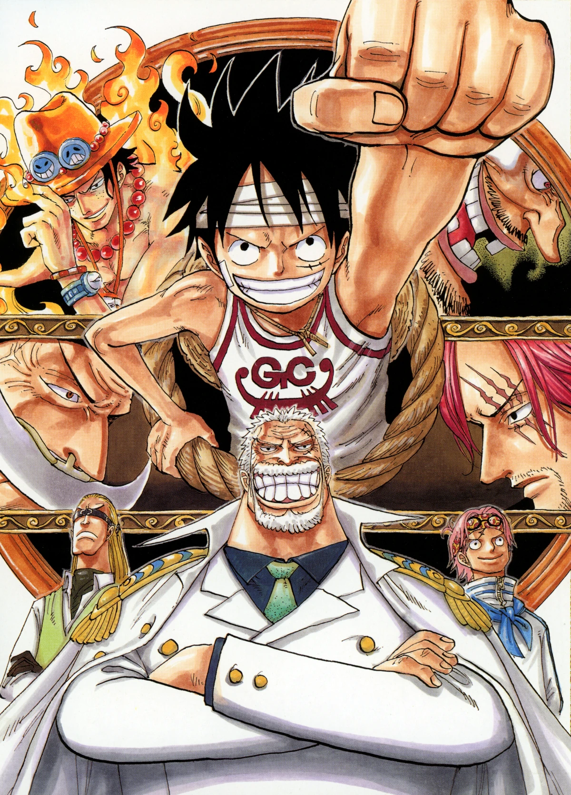

As the Straw Hat Pirates rest at Water 7 after successfully escaping from Enies Lobby, they are visited by a group of Marines that includes familiar faces to Luffy while Franky promises to build the crew a new ship. In the meantime, Shanks and Whitebeard discuss the actions of Ace and Blackbeard, whose fateful duel on Banaro Island will inevitably serve as the trigger for a world-shaking war.
Familiar Faces, Family Legacy Revealed, and a Warning
After the Straw Hats leave Enies Lobby, the story shifts forward two days where the heroes have returned back to Water 7. Galley-La has begun fixing the damages to the city by the Aqua Laguna, while the Franky Family repairs their house. Sodom and Gomorrah have been patched up as well. While in Iceburg's office, Iceburg and Franky are shown having a conversation where Iceburg reveals that he plans to turn Water 7 into a ship and float it out to sea. Franky suddenly gets a call from Zambai that the stuff he bought with the Straw Hats' stolen Beli 200,000,000 has arrived.
The Straw Hats have finally awoken after two days of sleep save for Luffy who is still sleeping while simultaneously eating at the same time. Nami mopes over having lost their belongings in the storm, but Galley-La returns them after confiscating it while thinking that the Straw Hats were the assassins. Franky then comes by and reveals that he bought a legendary Treasure Tree with their stolen Beli 200,000,000 with which he plans to build a ship. He asks the Straw Hats to crew this ship, because his dream is that someone, he admires rides it.
Suddenly an outcry from the shipwrights sound out as they realized a Marine ship has docked at their port, recognizing it as the ship of the legendary Vice Admiral Garp, who cornered the Pirate King, Gol D. Roger. Garp tells two mysterious Marines to wait as he unceremoniously breaks down the wall to where the Straw Hats are staying and then punches the sleep-eating Luffy, waking him up. Surprisingly, it hurts the rubber man, and Sanji comments that it should not. Garp claims there is no way to dodge a "fist of love" while removing his mask, commenting that Luffy has been too reckless. Luffy looks on in surprise as he identifies, much to everybody's shock, Garp as his grandfather.
Luffy tells the others to not lay a finger on him, as Garp may kill them. Luffy goes on to explain that he has nearly been killed many times by Garp in the past. Garp claims that the reason he shoved Luffy into deep valleys, left him into the jungle in the middle of the night, and many other dangerous methods, was all to make him a strong man. Garp then tells everyone that, in the end, he entrusted Luffy and Ace to a friend of his to make them into strong Marines. Luffy yells at his grandfather that he always wanted to be a pirate and Garp tells him that "the Red-Hair" influenced him with that nonsense. Luffy tells Garp that Shanks saved his life, and a fight between the two breaks out. Suddenly, the two fall asleep. Garp, who wakes up first, punches Luffy and then ironically says that this kind of attitude is what makes people angry.
New Bounties
Back on Water 7, the Straw Hats eagerly wait for their new ship, which would be done in five days. Kokoro asks Nami whether she has already found the direction to the next island. Nami answers 'yes', but she says that the direction is pointing a little too downwards. Kokoro answers that the next island is Fish-Man Island, located underwater. Sanji is very excited because of the number of young mermaids there (a dream that is crushed when he remembered that Kokoro is a mermaid; at this she angrily yells there are much younger mermaids). Robin is a bit worried about how Devil Fruit users can get there but Kokoro says that getting undersea is not the problem, but even getting there is. Just between Water 7 and Fish-Man Island there is a Florian Triangle, where hundreds of ships are crushed by the vicious terrain. The ships which do not sink are all empty, and many people speculate that the vacant ships are haunted. They were also wondering what bounties they will get, since the entire Enies Lobby's destruction is blamed on them (while mentioned nothing of Franky Family or Buster Call), but they are all excited—except Nami, who sees it as a bad thing, and Robin, who sees it neutrally. Five days later, as they go to receive their new ship, the Straw Hat Crew received their new bounties from a worrisome Franky Family:
While Luffy and Zoro are happy, Nami is horrified to see she now has a bounty, and Robin just smiled at her "small" rise (and updated poster photo). Chopper is shocked, due to his small bounty. Sanji is completely dejected, as the Marines failed to get his photograph and thus used a very ugly composite of him.
While everyone talks about their pictures and the Marines discuss what happened to Sanji's picture, they are presented with their new ship, a brigantine twice the size of Merry called the Thousand Sunny, with many features like specially designed sails, a courtyard, and a locked fridge. Franky is also shown to have gone back to the Franky House. He wants to stay on Water 7, but also wants to go with the Straw Hats. He knows he will say yes to Luffy if Luffy asks him to join, so he is hiding. However, the Franky Family wants him to join Luffy, and takes his swim briefs. This results in a half-naked Franky chasing them to get his underwear back. Franky is then caught by Zoro, Sanji, and Chopper, and put into a cannon. They fired him to a spot near to the Kings of All Beasts and Luffy is seen holding his underwear. He tells Franky if he wants his underwear back, he will have to join his crew.
Usopp Returns and the Crew Departs
In one of Water 7's alleys, Usopp hurriedly runs toward the new ship, stating that he had perfected his return to Straw Hats, believing that his crewmates will actually be cheering for his return. Franky, for that matter, is asking Luffy about his decision to set sail and Luffy gives him a valid reason, in a carefree tone that would be convincing if he wasn't sweating bullets. It is revealed that earlier on, the Straw Hats were talking about Usopp's practice. While Luffy was initially eager to pick him up, Zoro was against it, stating that Usopp should not be permitted to return as if nothing had happened, filled with pride after leaving of his own volition, and challenging Luffy to a fight. Thus, he threatened that Luffy must make Usopp realize he himself is too prideful and the guilty party here, or else he will be the one to leave this time.
After further discussion, they agreed to leave him on Water 7, unless Usopp gave a proper apology for his actions to the crew. On board of his ship, Garp was "complaining" that Sengoku forced him to come back to deal with Luffy, while Aokiji took a nap on board of his ship. By then, the new ship set sail, and everyone believed Usopp was not coming back. Suddenly, Garp began to attack the Straw Hats by himself, and demonstrated his Iron Fist Meteor—in which he threw a very fast cannon ball by himself—shocking everyone. It was at this point that Usopp would show up, who admitting that he himself had fought in Enies Lobby as Sogeking. He continued by talking about the great times that they had, but despite the fact that the Straw Hats are having trouble defending the Iron Fist Meteor, everyone (save Chopper) pretended they could not hear Usopp's words. Finally, Usopp realized they were serious about leaving without him, so he yells at the top of the lungs that he was sorry and with tears streaming out his eyes begs to rejoin their crew. Satisfied an overjoyed Luffy stretched his arm over and grabbed Usopp back onto the new ship.
With the Straw Hats once again whole, the group began to head out just as Garp's ship begins to bear down on them. Before doing so, they realize they must name their ship. Luffy stupidly suggests a few animal combinations with lion (due to the lion-shaped sternhead) but Franky makes a suggestion that Iceburg came up with; since Luffy wants to be the king of pirates then he and the Straw Hats should have a ship that should "sail thousands of oceans just like the sun" thus the name "Thousand Sunny". The crew instantly take a liking to it (despite Franky also having a name of his own) and thus the Thousand Sunny begins its maiden voyage as Garp prepares to crush the ship with a gigantic iron ball with his bare hands.
Luffy, however, tells Garp and Koby (though forgets Helmeppo again) that he will see them soon and gives one last thanks to the people of Water 7 before Franky activates the the Coup De Burst (a cannon on the back of the ship) to catapult the ship into the air just as Garp launches the ball. Franky then states the Thousand Sunny will do everything the Going Merry can do and better and will pick up its torch for the Straw Hats' adventures as the ship escapes from the Marines.
Life soon starts to return to normal for Water 7, Oimo and Kashii decide to stay a little while, though comment on meeting "Sogeking" on Elbaf. Galley-La returns to their shipyard. Kokoro, Chimney and Gonbe start to head back for their train station and Iceburg offers the Franky Family jobs at Galley-La prompting them to call him the "new bro". Meanwhile on an unnamed island, Smoker has just caught another pirate when Tashigi reminds him of the award ceremony for what happened in Arabasta. Smoker comments that the Marines are restless and need a group even stronger than the Straw Hats to fight, though he wagers his pride that he will crush the Straw Hats in the New World.
Meanwhile, reports spread across the world about the Straw Hats raiding Enies Lobby in the Baratie (where Zeff and the cooks laugh at Sanji's ugly picture), in Foosha Village (where the mayor gripes about Luffy's notoriety), Syrup Village (where Kaya recognizes Usopp in spite of his Sogeking mask), in Shimotsuki Village (where Koushirou tells his students that he can't teach them how to be a pirate like Zoro), Cocoyasi Village (where Genzo both complains about and blows up Nami's wanted picture) and the Drum Kingdom (now renamed Sakura Kingdom), with everybody noticing the Straw Hats' wanted posters.[10] It then goes to Arabasta where King Nefertari Cobra and his subordinates are just finding out about the Straw Hats new bounties as well as Nico Robin being in the crew. However, when Vivi is told she takes the news in stride telling the others that there is no way to know what Luffy thinking, though is convinced that he will become Pirate King. Then the scene shifts to Baltigo, a barren sort of island somewhere in the Grand Line. In a large, oddly shaped fort, some men are shown talking about the fall of Centaurea. Another man nearby tells them not to be glad of a single victory; they are in the midst of war. He walks away, then notices Luffy's poster and asks about it. A man nearby tells him he was the one who took down Crocodile, and after the events at Enies Lobby, the government could not suppress their existence any longer. The man walks out onto a balcony and is revealed to be Monkey D. Dragon. He encourages Luffy to follow his dreams, saying that the stability of the world must be questioned and that the time they meet will soon come. With that we go back to the crew who celebrates the return of Usopp and Robin as well their new crewmate and ship, Franky and the Thousand Sunny before setting out for their next destination, Fish-Man Island.